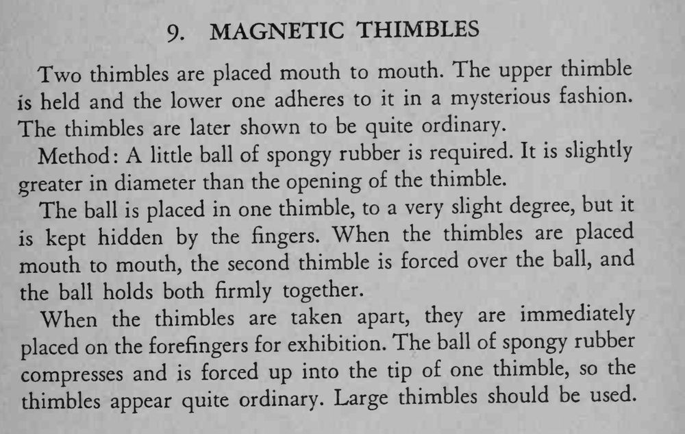

两只拇指套口对口一碰就紧紧吸在一起，像有磁力一样，随后展示两只拇指套完全普通。
用大号拇指套，球要塞得够深，分开后马上戴到手指上才不露。

Two thimbles are placed mouth to mouth. The upper thimble is held and the lower one adheres to it in a mysterious fashion. The thimbles are later shown to be quite ordinary. Method: A little ball of spongy rubber is required. It is slightly greater in diameter than the opening of the thimble. The ball is placed in one thimble, to a very slight degree, but it kept hidden by the fingers. When the thimbles are placed mouth to mouth, the second thimble is forced over the ball, and the ball holds both firmly together. When the thimbles are taken apart, they are immediately placed on the forefingers for exhibition. The ball of spongy rubber compresses and is forced up into the tip of one thimble, so the thimbles appear quite ordinary. Large thimbles should be used.